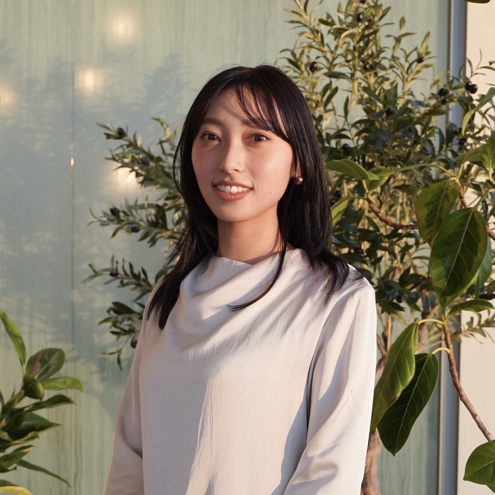

01
やると決めたことは、最後までやり抜く。
責任感と粘り強さを武器に、目標達成まで試行錯誤を重ねます。 課題に直面したときも「できない理由」ではなく 「どうすれば実現できるか」を考え、 必要な行動を自ら起こしながら最後までやり切ります。
Creative / Marketing Portfolio
課題の本質を見つめ、企画・制作・改善を繰り返しながら、 ユーザーの行動を動かし、成果につながるクリエイティブを追求しています。
VIEW WORKSProfile

山下 莉央 Rio Yamashita
近畿大学 産業理工学部 建築・デザイン学科卒業。
現在はWebマーケティング領域を中心に、 Webサイト運用、広告運用、SNSコンテンツの企画・制作・運用、 撮影ディレクション、デザインなど、 課題発見から企画、制作、改善まで幅広く携わっています。
表に立つ人やサービスを支えることにやりがいを感じる、 “生粋の裏方”だと自負しています。 目的達成のために必要なことを自ら考え、 周囲を巻き込みながら最後までやり切る力が強みです。
データからユーザーの反応を読み解く分析力と、 アイデアを形にするクリエイティブ力を掛け合わせ、 人の行動と成果につながるコミュニケーションを生み出しています。
My Approach
01
責任感と粘り強さを武器に、目標達成まで試行錯誤を重ねます。 課題に直面したときも「できない理由」ではなく 「どうすれば実現できるか」を考え、 必要な行動を自ら起こしながら最後までやり切ります。
02
人やサービスの魅力を最大限に引き出し、 届けたい相手へ届く形に整えることにやりがいを感じています。 目立つことよりも、誰かの想いや成果を支える存在として、 企画や制作の裏側から価値を生み出します。
03
デザインや表現への感覚を大切にしながら、 ユーザーの反応やデータをもとに改善を重ねます。 「なぜこの表現なのか」を考え、 感性と分析の両面から成果につながるクリエイティブを追求します。
Capabilities
Data Analysis
Planning & Design
Communication Design
Project Management
Selected Projects
01
WEB MARKETING / CREATIVE
BACKGROUND
応募獲得数の最大化に向けて、 広告クリエイティブの改善と費用対効果の向上が課題でした。
ACTION
Meta広告のクリエイティブ制作・ABテストを実施。 ユーザーの反応データを分析し、 訴求軸・コピー・デザイン・構成要素ごとに改善施策を立案しました。
担当： 企画 / クリエイティブ制作 / 分析 / 改善
RESULT
CPA IMPROVEMENT
−45％
応募獲得単価
5,000円台 → 2,800円台
Meta広告クリエイティブ制作例
02
WEB / CONTENT / CRM
BACKGROUND
求人情報を必要なユーザーへ届け、 サイト訪問から応募までの導線を整えるため、 媒体や時期に応じたコンテンツ改善が求められていました。
ACTION
ユーザー目線で情報設計を見直し、 季節やキャンペーンに合わせたTOPバナー、 ターゲット別の求人原稿、 LINE配信用クリエイティブの企画・制作・配信設定を担当しました。
担当： 企画 / ライティング / クリエイティブ制作 / 更新 / 配信設定
RESULT
ユーザー接点ごとに最適な情報とクリエイティブを設計し、 応募につながるコンテンツ制作を推進。
TOPバナー・キャンペーンバナー制作例
ユーザー属性や配信目的に合わせた制作例


03
SNS / VIDEO / MARKETING
BACKGROUND
若年層への認知拡大と、 自社サービスへの新規流入獲得が課題でした。
ACTION
SNS動画コンテンツの企画から制作・運用まで一貫して担当。 ユーザー行動やSNSトレンドを分析し、 企画立案、撮影ディレクション、編集、投稿改善を実施しました。
担当： 企画 / 撮影ディレクション / 編集 / 運用
RESULT
SNSを活用した新たな集客チャネルを構築し、 ブランド認知向上および応募獲得に貢献。


SNS動画コンテンツ制作例
TikTokアカウントを見る04
HR / BRANDING / DESIGN
BACKGROUND
採用ターゲットへ企業の魅力や働く環境を伝え、 応募意欲を高める採用広報コンテンツの充実が求められていました。
ACTION
社員インタビューの企画・取材・撮影・記事制作に加え、 採用イベントや会社説明会で使用するピッチ資料、 Wantedly記事のアイキャッチなど、 採用ブランディングに関わる制作物を幅広く担当しました。
担当： 企画 / 取材設計 / ライティング / 編集 / 写真撮影 / デザイン制作
RESULT
採用ターゲットへの企業理解を促進し、 採用広報および企業ブランディングの強化に貢献。
取材対象者の選定から取材設計、撮影、 ライティング、編集まで一貫して担当しました。
会社説明会で使用している資料の一部を掲載しています。 画像をクリックすると拡大表示できます。
Wantedly記事のアイキャッチ画像・採用クリエイティブ制作例。
Experience
2023
美術デザイナー助手
映像・広告制作の現場で、デザイン制作や撮影準備など、 制作を支える実務に携わりました。
2024–
WEB・人事戦略
Webマーケティング、サイト運用、広告改善、 SNS企画・運用、コンテンツ制作、デザイン、 撮影ディレクションなどを担当しています。